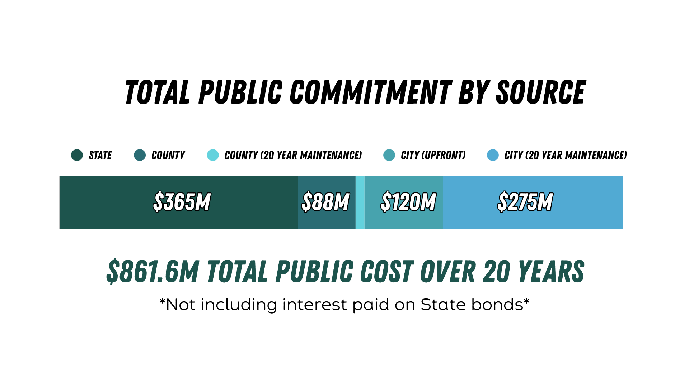

09 — Long-term outlook
The long-term cost obligations from the city, depending on outcome
In short: renovating is cheaper than the city's own estimate for maintaining the arena as-is, but the full public commitment across all three governments tops $861.6M, before even counting bond interest that isn't public yet.
Same three-outcome breakdown as the front page. Here's the reasoning behind each number.


One more thing worth being upfront about: the $861.6M figure above is nominal. The state's $365M is being repaid through bonds, and bonds carry interest. What that interest will actually cost isn't public yet, so the true long-term price tag is higher than $861.6M, but by how much isn't something anyone can currently point to a number for.
Sources
- Portland.gov, "What's next for the Moda Center? Get the facts": confirms the $505M facility assessment total and states the $23M reduction is the completed scoreboard ($14M) plus ice rink technology with no replacement plans ($9M). (Portland.gov) Also: KATU, "Portland review in 2024 detailed $505M in needed Moda renovations as team asks for $600M." (KATU)
- Rip City Not Rip Off, "Moda Center Renovation," reporting the City's June 3, 2026 internal summary memo reconciling the $505M facility assessment down to a $402M "no-NBA" figure, obtained via public records request. (ripcitynotripoff.com)
Renovation proceeds: $395M over 20 years. $120M construction + up to $275M maintenance, covered on the City's Commitment page.
No renovation, team stays: $482M over 20 years. The city's own consultant's number (Venue Solutions Group, 2024) for keeping the current 30-year-old arena running as-is. The underlying 2024 facility assessment actually identified $505M in total need; the city's own FAQ page confirms the $23M difference is the completed scoreboard replacement ($14M) plus ice rink technology the city has no plans to replace ($9M), bringing the figure down to $482M.1
No renovation, team leaves: $402M over 20 years. This traces back to the City's own June 3, 2026 reconciliation memo, not a third-party recalculation. Starting from the same $505M/$482M base above, the City itself subtracted roughly $80M in items it ties specifically to NBA needs (locker rooms, team store, courtside club, broadcast/production, sports lighting) to arrive at $402M. The figure was obtained and published by a site critical of the current deal via a public records request, but the underlying math is the City's, not that site's.2
Everything above is the city's slice. Zooming out to the full public commitment, if the renovation proceeds: $365M from the state, $101.6M from the county, and $395M from the city over 20 years adds up to roughly $861.6M in total public money. None of it includes private capital from ownership.